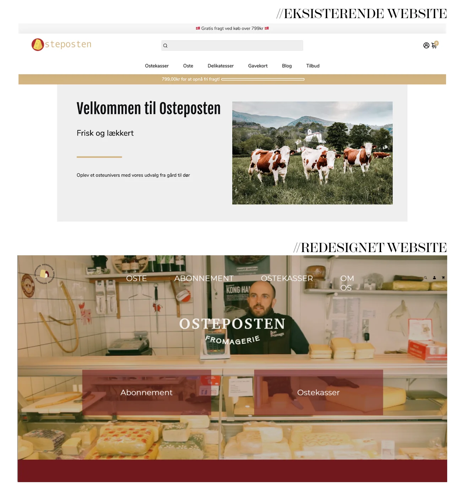
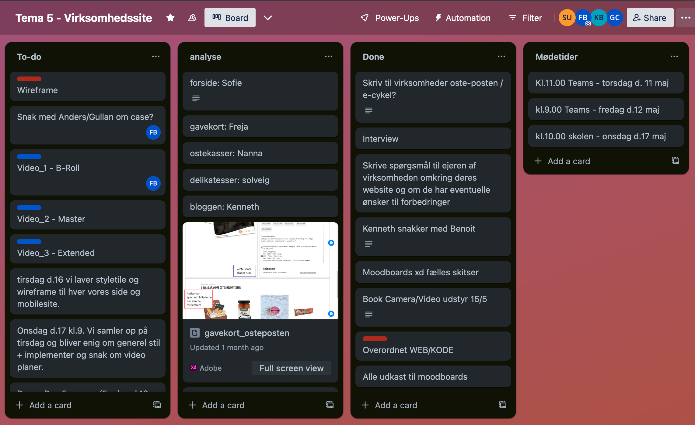
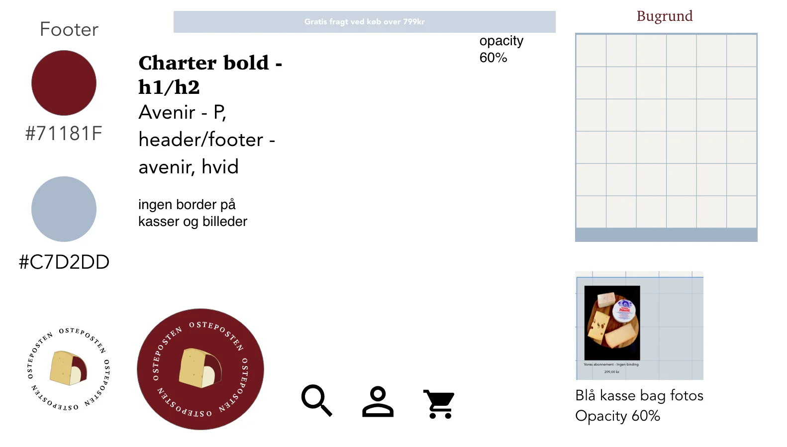
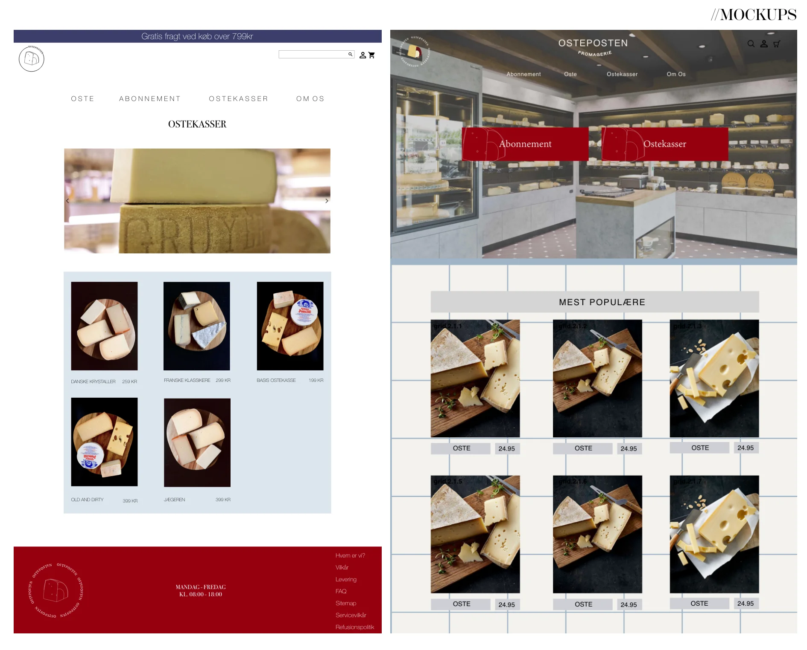

Virksomheds /SITE
Virksomheden
Det første vi skulle gøre, var at udvælge en virksomhed i fællesskab, som vi synes havde et website der trængte til et redesign.
Vi valgte at tage kontakt til Benoir, som ejer Osteposten.dk, som er en hjemmeside, der sælger oste på abonnement, da vi havde set ham og hans koncept i Løvens Hule. Ved siden af Osteposten, ejer Benoir den fysiske ostebutik Bon Fromage. Efter vi havde besøgt den fysiske butik, blev vi i gruppen hurtigt enige om at vi ville fokuserer på et få noget af identiteten fra butikken over på websitet. Benoir havde selv kodet sin hjemmeside, der havde et meget standard udseende, og et simpelt design, men med en masse stockfotos, der virkede malplacerede og upersonlige; vi ville derfor komme med en redesign løsning, med et mere personligt touch, heriblandt en mere personlig fotoidentitet og nogle stemnings videoer.
Gruppearbejde
Virksomhedssitet skulle laves i grupper; Jeg var i en gruppe af 5 personer. Vi lavede ikke en fysisk gruppekontrakt, men blev i startet enige om hvilke retningslinjer der skulle være for vores gruppearbejde; vi diskuterede bl.a. rollefordeling, målsætninger og regler, her i forhold til mødetider, forventninger og ansvar.
Daily Scrum
Vi har benyttet os af "Daily Scrum", hvor vi har opsummeret hvor langt vi hver især var kommet, og hvilke opgaver vi skulle i gang med. Til at holde et overblik over processen i forhold til deadlines og opgaver, oprettede vi et Trello Board, hvor vi hver især kunne se hvem der var i gang med hvad, og hvad man skulle have styr på til næste dags møde.
Research og test
Research
Før vi mødtes med Benoir, lavede vi en grundig research af det eksisterende website, for at finde ud af hvad vi ville ændre i vores redesign, og hvordan vi kunne gøre sitet mere brugervenligt. Til at starte med lavede vi et sitemap, for at danne os et overblik over siderne på websitet. Her blev vi hurtigt enige om at navigationen var en smule rodet og uoverskuelig, og satte os for at lave denne mere overskuelig at navigere rundt i, på vores redesign.
I vores deskresearch, satte vi os bl.a. ind i Ostepostens målgruppe, produkter og koncept. Her fandt vi ud af at den primære målgruppe er folk i aldersgruppen 35-60 år. Det er kulturinteresserede i den højere middelklasse, som hovedsageligt bor i lokalområdet, Gentofte, Hellerup og Stor København. Da Ostepostens hovedformål er at sende oste abonnementer, ville vi selvfølgelig gerne udbrede konceptet til at kunne ramme alle Danmarks osteelskere. Derudover lavede vi en dybdegående layoutanalyse med wireframes og styletile, for at kunne navigere rundt mellem det nuværende design og vores redesign.
Test
Vi lavede en række test i løbet af vores proces, for at finde ud af hvad vi skulle ændre på websitet, heriblandt en 5-sekunders test i fællesskab i gruppen og en BERT test, som vi sendte ud til vores omgangskreds. Her fik vi en række indsigter i forhold til hjemmesidens layout; Svarene var overvejende positive, men der manglede en sammenhæng mellem billederne, som havde meget forskellige udtryk, hvilket clasher med det symmetriske web layout. Derudover var fokus på logoet som havde et "tegneserie agtigt" udtryk; logoet blev derfor også en af de ting vi ville redesigne og give et mere high-class og stilrent udtryk. Der var også noget i forhold til gestalt lovene, bl.a. loven om nærhed; her ville vi fokusere mere på at omkranse tekst og billeder der hører sammen, inden for den samme boks, for at skabe en bedre sammenhæng på sitet.
Video- og billedmateriale
Vi valgte at vi gerne ville have en stor stemningsvideo på websitets landing page, som skulle fungere som baggrundsbillede, og skabe blikfang. Landing page videoen har fået et gråt filter, for at få teksten og navigationen til at stå mere frem.
Ens for alle videoerne på vores site er at de er klippet og redigeret i Adobe Premiere Pro. Der er benyttet synlig klipning uden overgange i alle vores videoer, og vi har tilføjet et filter som gjorde kvaliteten mere grynet, for at give dem et lidt mere gammeldags og high end udtryk. Vi valgte at bruge vores videointerview med Benoir på om-os siden, så en eventuel kunde, har mulighed for at få et lidt dybere indblik og mere information om Osteposten og stifteren bag.
Udover videomaterialet lavede vi produktbillederne om så de fik et mere sammenhængende udtryk; vi ændrede baggrunden i Photoshop så alle produkterne havde den samme lyseblå baggrund.
XD-Prototype
Vi lavede et fælles XD dokument, hvor vi kunne samle vores design proces, wireframes og mockups. Da vi skulle til at blive enige om et fælles redesign, lavede vi hver vores mockup af en side på websitet. På den måde kunne vi få et overblik over hvad vi hver især ønskede sitet skulle indeholde i forhold til layout og design principper, for derefter at kunne udarbejde et fælles design udtryk. Vi udtrak fonte, farver og logoer fra de forskellige mock ups, hvorefter vi lavede et fælles styletile.
//STYLETILE
//MOCKUPS
GitHub
Efter vi var blevet enige om vores stil til redesignet, skulle vi i fællesskab kode vores website. Her brugte vi den viden vi havde tilegnet os fra de tidligere temaer i HTML, CSS og JavaScript. For at kunne arbejde i den samme kode skulle vi benytte os af GitHub, som er en platform, der fungerer som et centralt sted for versionsstyring og samarbejde på softwareprojekter. Her oprettede vi et fælles repository til vores projekt, som fungerer som et "depot" for kodebasen og vores projekts historik. Ved at anvende GitHub kan man altså arbejde flere sammen på det samme repository, og indsende ændringer via push/pull requests, hvorefter kan man gennemgå og godkende ændringerne, før de integreres i projektet.